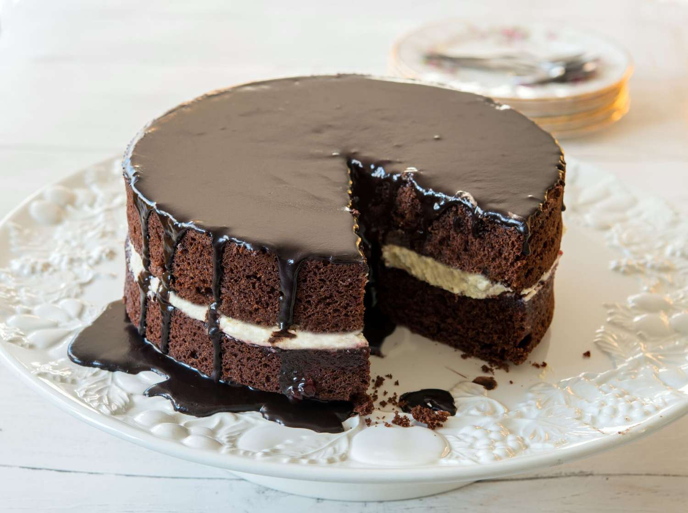
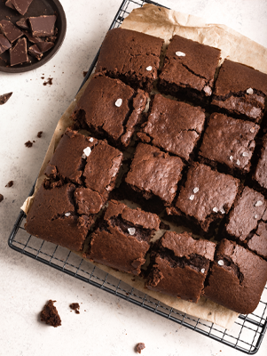

Freshly Baked, Locally Made
Find delicious homemade treats from bakers in your neighborhood.
Featured Bakers

Sweet Delights
Specializing in custom cakes and cupcakes.

The Dough House
Artisan breads and pastries.
How It Works
1. Find
Enter your location to find local bakers.
2. Order
Browse their menus and place your order.
3. Enjoy
Pick up your order or get it delivered!